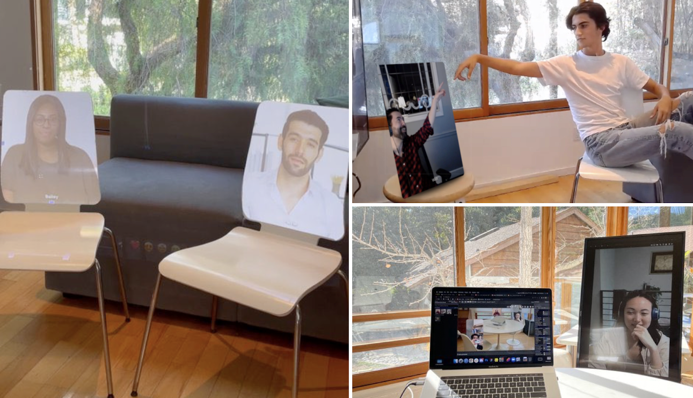
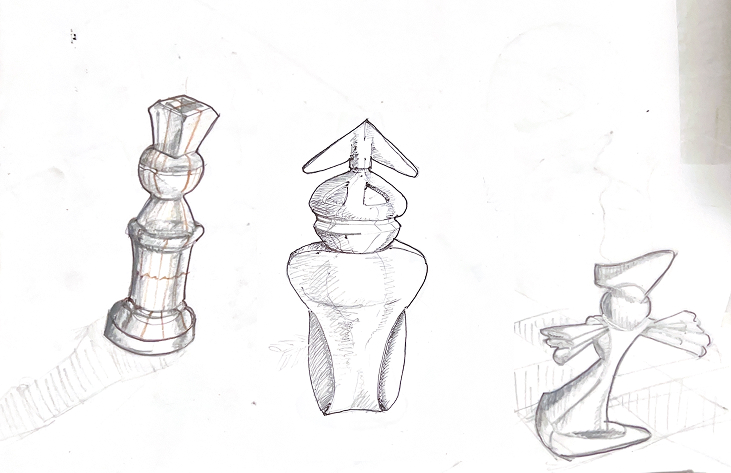
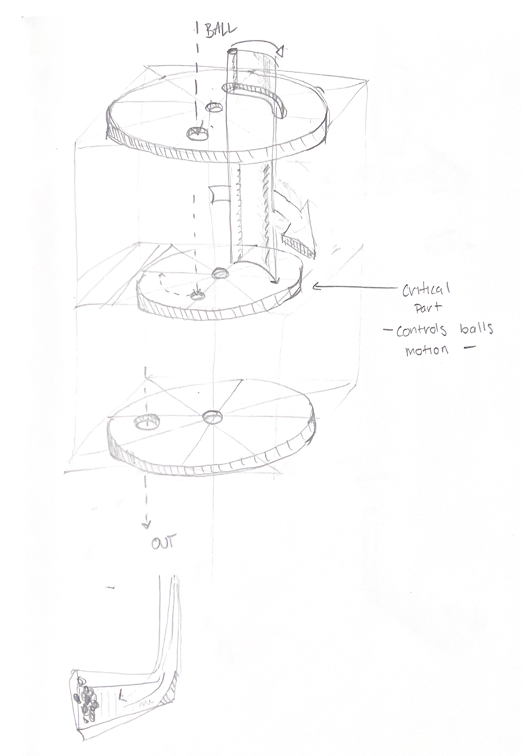

This computer vision portal tracks harbor waste collected by autonomous litter traps. I designed and lead 6 developed to build out v1 with a feed for detections, live metrics and device management.
I built out the design system and managed stakeholders across front and backend development. See: edge cases, redlines, color accessibility, alt. states
I worked with marketing material to build up high quality renders of products and short nartive pieces about the company.
I gave presentation for the company around Norway, featured at Olso Climate Tech Summit 2023 and Bodø Ocean 2024 Tech Tour
Run For OfficeInterface Design
In 2020, 70% of US elections went uncontested. Run For Office lets young people find local elections and gets them to start a campaign with the help of friends.
Run For Office highlights the highest-impact, vacant or uncontested elections; It also helps partner candidates with advisors to take the next step.
We aggregate all the nitty gritty: election deadlines, qualifications, and incumbent history in a mobile campaign dashboard.
I’ve been excited to watch young candidates use it in the 2022 midterm election and see them get elected to local office.
I’ve been excited to watch young candidates use it in the 2022 midterm election and see them get elected to local office.
ohyayCreative Video Confrencing
ohyay enables people to construct highly-advanced 3D spaces. I built dozens. This one allows participants to navigate multiple viewpoints and hear ambient conversations — a first for video conferencing.
And this one allows people to play hide-and-seek in a virtual space:)
ohyay x Music Rising: I explored a first iteration that brought musicians filmed in a mixed-reality studio into virtual ohyay spaces.
A second iteration of research used projections and monitors to place digital participants in a real-world space — and live cams to place physical participants in a digital one.
A third iteration applied these experiments at a live cocktail party. Portals equipped with monitors, directional speakers, and shotgun mics bridged guests between LA and NY.

Snapchat LensAR Design
I built this AR landmark as a digital sculpture to experience in your hand. The lens is activated by a physical card which allows the viewer to play with it. It gained over 75k interactions.
PolarizationMaterial Study
a
a
a
a
a
AlbersColor Study
a
a
a
a
a
a
a
IttenColor Study
a
a
a
a
The Island Documentary
I filmed a documentary about a small island on the coast of Norway trying to uphold an unusual social contract of shared land ownership while welcoming outsiders into the community. I shot and edited the short film over three years.
In addition to ethnographic interviews and documentary footage, I shot extensivle with drone, carefully looking to capture beautiful moments in nature. View as seen looking up from Vestfold .
While shooting in Norway I discovered the pilotage tradition of the Oslo Fjord. I followed a captain to make a short film about the pilotage industry and its heritage. Parts are then animated using Dalle 2 and Runway Gen2/Gen3.
The film premerined in July 2024 for the local community and was screned at film festivals the following year.
Chords2CureDocumentary
In a multi-year project with cancer survivors, I worked to document and present their stories in a new light. Here, I used a tennis game as a metaphor for their struggle and perseverance.
Previously in this minute-long sequence, I used infographics and symbols to communicate difficult statistics about pediatric cancer.
sketch of folding shoe mechanism
sketch of folding shoe mechanism
negative space composition study: notice how the white background becomes the forground cast by implied rectangles
city train-station form model
city train-station form model

chess-piece design exercise
varients on an ergonomic spatula handel
final ergonomic spatula handel
various lamp form explorations
action sketching exercise
hand drawn typography. spot the hidden number in this 5 sided shape.

infographic for gum dispensing mechanism
Thanks for visiting!Built by Elijah in La Honda, CAIntrested in what I get up to in Norway check out this articleand my resume